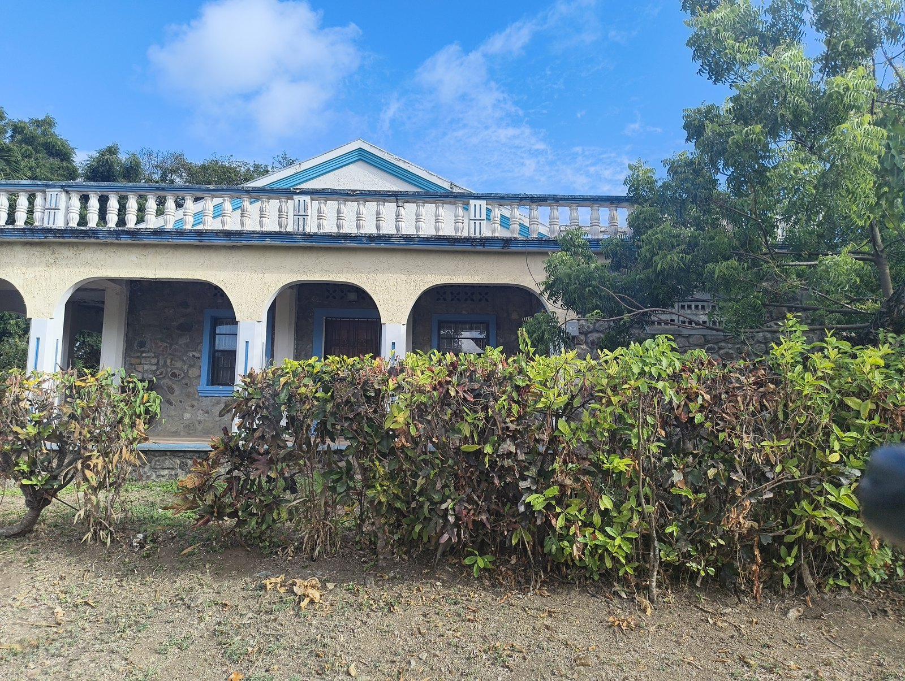
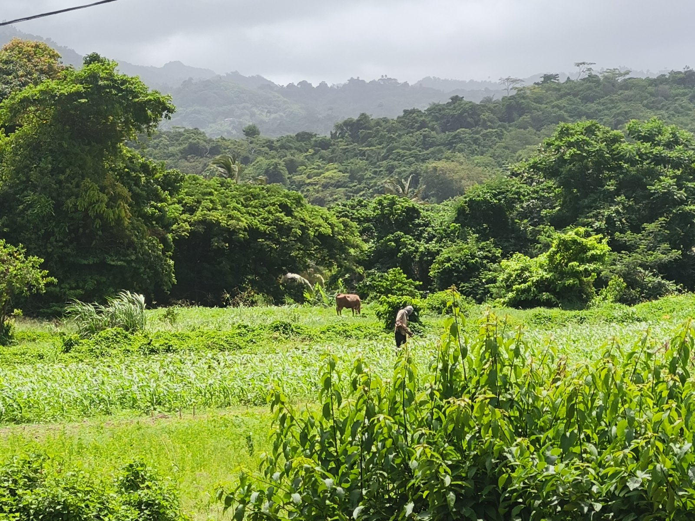
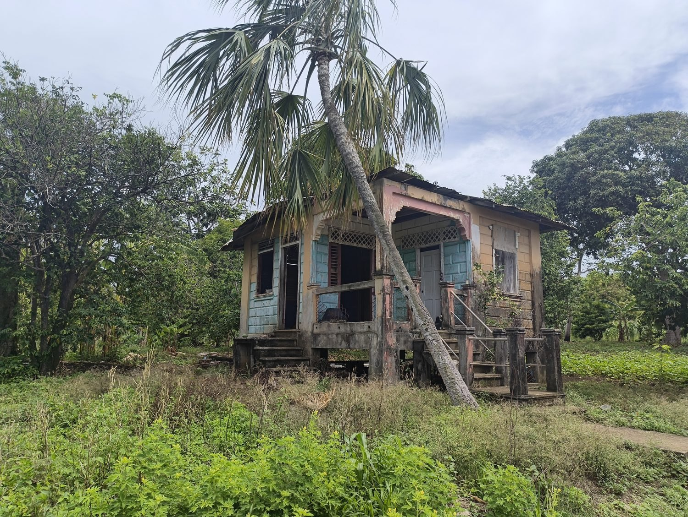
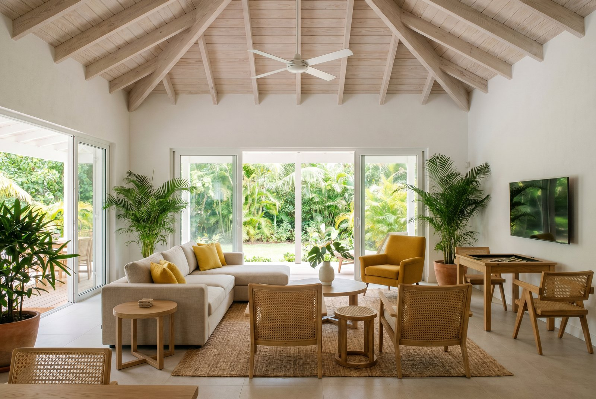
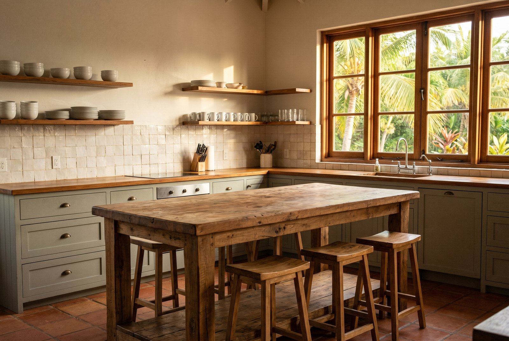
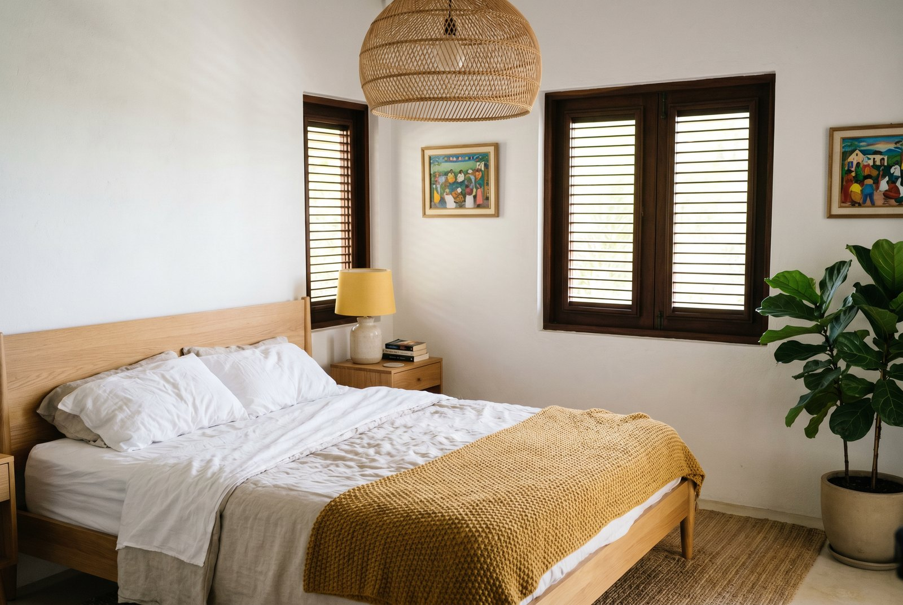
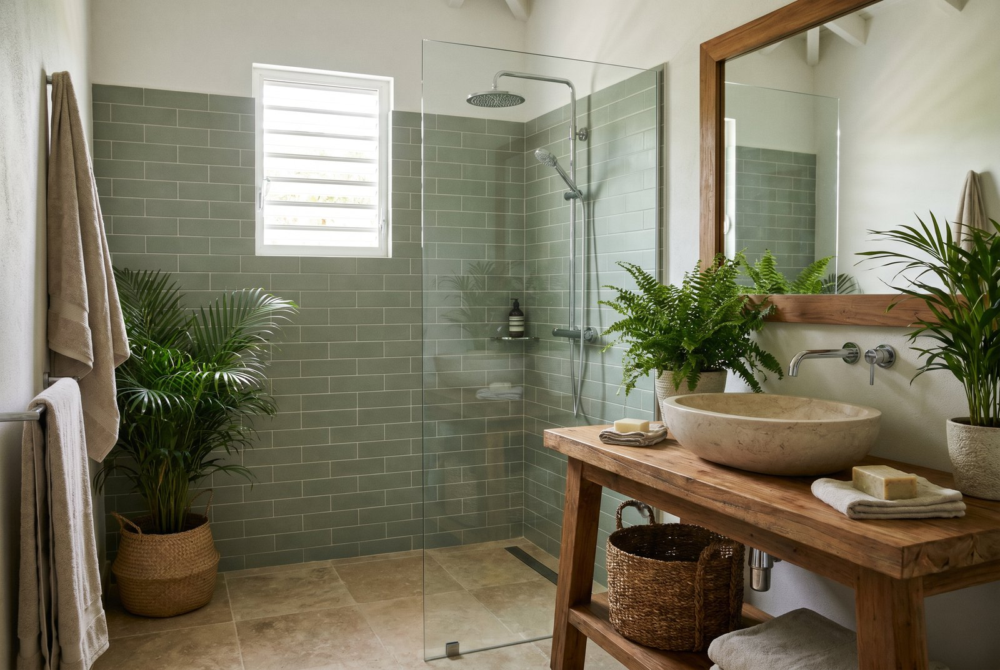

The house · Simon, St Andrew, Grenada
Room moodboards
One direction across the house — Caribbean-Scandi: Scandinavian calm and function, met by Caribbean light, timber and greenery. Warm whitewash, pale woods, cane and natural fibre — lifted by a sunny yellow through the living and sleeping rooms, and a spa green in the bathrooms.
Grounded here
The direction isn't imported — it answers this ground. The house as it stands, the view it looks onto, and the Caribbean vernacular nearby: fretwork verandahs, pastel timber, pitched roofs raised off the earth. The rooms that follow take their cue from these.



Bring the outside in
The shared heart of the house — relaxation and activity in one room. Sofas and a games table by day, film nights by evening, glass doors thrown open to the garden so the vaulted room and the outside read as one. Comfort first, uncluttered, unmistakably Caribbean-Scandi.

Materials & texture
- Whitewashed plaster & exposed pale timber ceiling
- Light oak + woven cane furniture
- Jute / sisal rug, linen upholstery
- Terracotta pots, big leafy plants
- Full-height glass sliding doors to garden
Key pieces
- Low oatmeal-linen modular sofa
- Cane lounge chairs + mustard-yellow armchair
- Round timber coffee table
- Timber games table · discreet wall TV
- Ceiling fans for passive cooling
Sturdy, practical, shared
A working kitchen built for many hands — communal preparation and gathering around one solid island. Honest materials that take daily use, everything in easy reach, made for the shared experience of cooking together.

Materials & texture
- Solid / butcher-block timber worktops
- Reclaimed-timber island
- Simple sage shaker cabinetry
- Open timber shelving
- Handmade tile splashback · terracotta floor
Key pieces
- Large central island + timber stools
- Open shelves of everyday crockery
- Induction hob & range
- Deep sink under the window
- Generous larder / storage
Character, calm, Scandi
Restful and simple, with character — light wood, natural linen, local art on whitewashed walls, and a warm yellow lift. Rooms that feel personal and quiet rather than hotel-generic.

Materials & texture
- Light oak bed & bedside tables
- White cotton + natural linen, chunky knit throw
- Woven rattan pendant
- Timber louvered shutters
- Jute rug, framed local art
Key pieces
- Light oak bed frame
- Yellow lampshade + mustard knit throw
- Rattan pendant light
- Characterful Caribbean artwork
- Potted plant, bedside reading light
Simple spa, in green
Calm, clean and practical — natural stone and timber, plenty of greenery, and a walk-in rain shower. A spa feeling kept simple and achievable, not opulent.

Materials & texture
- Sage-green tile, travertine floor
- Timber vanity + stone vessel basin
- Clear glass shower screen
- Brushed-steel fittings
- Seagrass baskets, ferns & palms
Key pieces
- Walk-in rain shower
- Timber vanity with stone basin
- Timber-framed mirror
- Louvered window for airflow
- Abundant greenery, folded natural towels